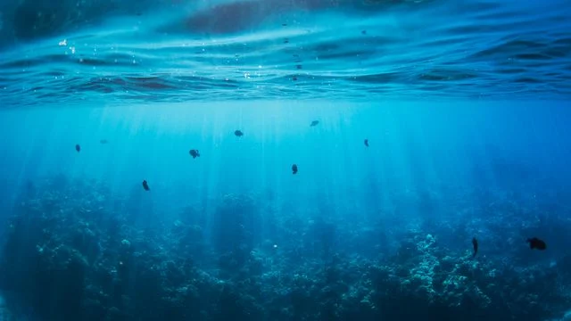

L’acqua, risorsa indispensabile per la vita e per l’economia, rappresenta una delle sfide sul fronte della sostenibilità e della transizione green che maggiormente dovrebbe attrarre l’attenzione degli investitori.Per questo motivo, da tempo, si parla della realizzazione di un Blue Deal che,alla stregua del Green Deal e in stretta correlazione con esso, dovrebbe regolamentare e pianificare a livello europeo tutte le iniziative per la salvaguardia dell’oro blu.
I punti chiave del progetto Blue Deal fra etica ed economia
Alla fine del 2023 il CESE, Comitato economico e sociale europeo, ha redatto 15 principi guida e 21 azioni che sono contenute nella Dichiarazione per un Blue Deal europeo.
L’attenzione è rivolta in particolare alle perdite d’acqua nelle reti e agli sprechi in agricoltura, industria e famiglie.
L’obiettivo dichiarato è quello di anticipare i bisogni, di preservare e gestire adeguatamente le risorse idriche comuni nel breve, medio e lungo termine.
Il CESE invita le istituzioni europee e gli Stati membri a riconoscere l’acqua come una priorità strategica nel periodo di programmazione 2028-2034. Il documento, però, oltre a mettere nero su bianco la necessità della realizzazione di una vera e propria politica europea dell’acqua, pone l’accento sullo stretto legame fra risorse idriche e diritti sociali dimostrando una particolare attenzione per gli aspetti di sostenibilità sociale nel combattere la povertà idrica.
Il mare, una risorsa strategica per la transizione verde
Mentre si parla di come tutelare la risorsa “acqua dolce”, l’Europa sembra aver ben chiara l’importanza economica del suo mare. Il dato emerge dall’ultima edizione del Blue Economy Report, la ricerca che l’UE dedica alle attività economiche basate o collegate all’oceano, ai mari e alle coste. L’economia del mare in Europa impiega 3,6 milioni di persone (+17% rispetto al 2020), garantisce un fatturato di 624 miliardi di euro l’anno (+21% rispetto al 2020) e rappresenta 171 miliardi di euro di Val, ovvero di Valore aggiunto lordo (+35% rispetto al 2020)
Il report ha messo in evidenza che l’Europa si conferma una meta turistica marina per definizione tanto che proprio questa voce risulta la più importante e pesa per il 29% sul totale del valore aggiunto occupando il 54% dell’intera forza lavoro della blue economy. Al secondo posto si conferma il trasporto marittimo che in termini di fatturato genera quasi un quarto dell’intero valore del comparto. Spicca negli ultimi anni il settore delle energie rinnovabili marine con un trend di crescita costante e profitti lordi stimati nell’ordine dei 2,4 miliardi di euro.
Infine, ottime performance anche nel settore delle risorse biologiche marine
